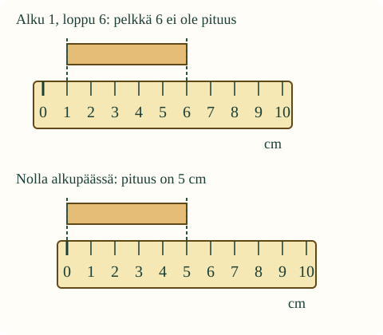
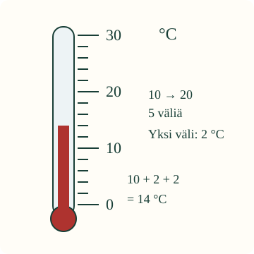
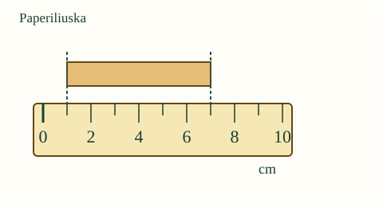

<link rel="stylesheet" href="lesson.css">


<section data-teaching-step="1" data-lesson-role="teaching-step">
<section class="lesson-intro">
  
  <h2>Sama mitta, ymmärrettävä tulos</h2>
  <p>Aava haluaa tietää, mahtuuko paperiliuska tutkimusvihkoon. Pelkkä ”pieni” ei riitä. Mitataan sen pituus ja kerrotaan tulos niin, että toinenkin ymmärtää sen.</p>
  <p><strong>Tavoitteesi:</strong> valitse sopiva väline, tarkista asteikko ja ilmoita mittaustulos lukuna ja yksikkönä.</p>
</section>
</section>


<section data-teaching-step="2" data-lesson-role="teaching-step">
<section>
  <h2>Mitä mittaat?</h2>
  <p>Pituutta mitataan esimerkiksi viivottimella. Lyhyen liuskan pituuden voi kertoa senttimetreinä (<strong>cm</strong>). Millimetri (<strong>mm</strong>) on pienempi: <strong>1 cm = 10 mm</strong>. Pitkään käytävään sopii mittanauha ja esimerkiksi metri (<strong>m</strong>).</p>
  <p>Lämpötila kertoo, kuinka lämmintä tai kylmää on. Sitä mitataan lämpömittarilla, tässä celsiusasteina (<strong>°C</strong>). Keittiövaaka mittaa massaa, esimerkiksi grammoina (<strong>g</strong>).</p>
  <p><strong>Toimiva tapa:</strong> päätä mitattava asia → valitse väline → tutki asteikko → aseta väline ohjeen mukaan → lue ja kirjaa luku sekä yksikkö.</p>
</section>
</section>


<section data-teaching-step="3" data-lesson-role="teaching-step">
<section>
  <h2>Esimerkki 1: viivottimen reuna ei ole nolla</h2>
  <p>Liuskan toinen pää näyttää ensin lukua 6. Mutta alkupää on luvun 1 kohdalla! Pelkkä loppupään lukema ei nyt kerro pituutta.</p>
  <figure data-lesson-role="worked-example"></figure>
  <p>Siirretään viivottimen <strong>nollamerkki</strong> alkupäähän. Vierekkäisten pienten viivojen välissä on tässä 1 cm. Liuska kattaa viisi tällaista väliä: <strong>5 cm</strong>. Nollasta ei ole vielä kuljettu yhtään senttimetriä. Viivoja on kuusi, mutta niiden välejä viisi.</p>
  <p>Kuvan senttimetrit ovat mallin asteikkoa. Älä mittaa näytön kuvaa omalla viivottimella: kuvan koko muuttuu eri näytöillä.</p>
</section>
</section>


<section data-teaching-step="4" data-lesson-role="teaching-step">
<section>
  <h2>Esimerkki 2: sama lukutapa, eri asteikko</h2>
  
  <p>Loikka tutkii ilman lämpötilaa. Tässä lämpömittarissa luvusta 10 lukuun 20 on <strong>viisi yhtä suurta väliä</strong>. Kymmenen astetta jaetaan viiteen väliin: yksi väli on <strong>2 °C</strong>.</p>
  <figure data-lesson-role="worked-example"></figure>
  <p>Punaisen pylvään yläpää on kaksi väliä luvun 10 yläpuolella: <strong>10 + 2 + 2 = 14 °C</strong>. Pieni väli ei siis aina tarkoita yhtä. Lämpömittarin 0 °C on lämpötila-asteikon sovittu kohta. Se ei tarkoita, ettei lämpötilaa olisi, eikä lämpömittaria siirretä ”alkupäähän” kuten viivotinta.</p>
</section>
</section>


<section data-teaching-step="5" data-lesson-role="teaching-step">
<section>
  <h2>Pysähdy ja ennusta</h2>
  <p>Viivotinta siirretään, mutta liuska pysyy paikallaan. Muuttuuko liuskan pituus vai vain sen päiden kohdalla näkyvät luvut? Mieti ennen kokeilua.</p>
  <details data-lesson-role="answer"><summary>Avaa perustelu</summary><p>Liuskan pituus pysyy samana. Päiden kohdalla näkyvät luvut voivat muuttua. Kun nolla on alkupäässä, loppupään luku kertoo suoraan pituuden.</p></details>
</section>
</section>


<section data-teaching-step="6" data-lesson-role="teaching-step">
<section><h2>Kokeile mittausta mallissa</h2>
  <p>Mallit ovat kuvitteellisia. Pituustehtävissä saat siirtää viivotinta. Lämpötilatehtävässä luet toisenlaista asteikkoa. Voit vaihtaa tilannetta vapaasti.</p></section>
</section>

<section data-teaching-step="7" data-lesson-role="teaching-step" data-audience-spacing="compact">
<section data-scimeasure data-audience-coupled>
  <h2>Kirjaa mittaus</h2>
  <p data-task>Mittaa mallin pituus. Kohdista viivottimen nolla alkupäähän ja ilmoita luku sekä yksikkö.</p>
  <div data-drawing></div>
  <fieldset data-controls disabled>
    <legend>Mittauksen ohjaimet</legend>
    <label>Tilanne
      <select data-case><option value="strip">Paperiliuskan pituus</option><option value="leaf">Lehden pituus, mallikuva</option><option value="air">Ilman lämpötila, mallikuva</option></select>
    </label>
    <div data-ruler-control>
      <label>Siirrä viivotinta: nollamerkki alkupään kohdalle
        <input data-zero type="range" min="1" max="3" step="1" value="1" aria-label="Viivottimen paikka">
      </label>
      <p data-position>Nollamerkki alkupään vasemmalla puolella</p>
      <p class="measure-note">Liukusäädin toimii myös nuolinäppäimillä.</p>
    </div>
    <div class="measure-fields">
      <label>Mikä väline sopii tähän?
        <select data-tool><option value="">Valitse väline</option><option value="ruler">Viivotin</option><option value="thermometer">Lämpömittari</option><option value="scale">Keittiövaaka</option></select>
      </label>
      <label>Tuloksen luku <input data-value type="number" step="any" inputmode="decimal" autocomplete="off"></label>
      <label>Tuloksen yksikkö
        <select data-unit><option value="">Valitse yksikkö</option><option value="cm">cm · senttimetri</option><option value="mm">mm · millimetri</option><option value="°C">°C · celsiusaste</option></select>
      </label>
    </div>
    <label class="measure-help"><input data-guide type="checkbox"> Näytä apumerkki tai asteikkovälin selitys</label>
    <button type="button" data-action="check">Tarkista mittaus</button>
    <button type="button" data-action="reset">Aloita alusta</button>
  </fieldset>
  <p data-result data-verdict="neutral" role="status" aria-live="polite">Ilman JavaScriptiä voit lukea esimerkit ja tehdä alla olevan käytännön mittauksen.</p>
  <p class="measure-note">Tarkistus vertaa valintojasi ja lukemaasi tähän malliin. Se ei todista, että osaat asettaa tai käsitellä oikeaa mittavälinettä. Harjoitus ei tallenna vastauksia.</p>
</section>
<details data-lesson-role="hint">
  <summary>Jos tarvitset apua</summary>
  <p>Pituusmallissa liikuta viivotinta yksi askel kerrallaan. Katkoviiva näyttää mitattavan kohdan, ei uutta mittayksikköä. Pieni asteikkoväli on 1 cm. Voit ilmoittaa pituuden myös millimetreinä: yksi senttimetri on kymmenen millimetriä.</p>
  <p>Lämpötilamallissa etsi ensin kaksi numeroa. Laske niiden väliset tasaiset välit. Lue sitten punaisen pylvään yläpään kohta. Apumerkin näyttäminen on vapaaehtoista.</p>
</details>
</section>


<section data-teaching-step="8" data-lesson-role="teaching-step">
<details data-lesson-role="teaching-step">
  <summary>Tutki lisää: voiko mitata ilman nollaa?</summary>
  <p>Jos liuskan alku on viivottimen luvussa 1 ja loppu luvussa 6, pituus on 6 − 1 = 5 cm. Nollasta aloittaminen on helppo työskentelytapa, mutta päätekohtien erotuskin kertoo pituuden. Yllä oleva harjoitus tarkistaa nimenomaan nollasta aloittamisen työohjeen.</p>
  <p>Saman esineen mittaukset ovat 5 cm, 8 cm ja 5 cm. Älä vain poista erilaista tulosta tai laske mittauksia yhteen. Tarkista yksikkö, mittauskohdat ja viivottimen paikka. Mittaa uudelleen ja säilytä alkuperäiset merkinnät. Pelkkä ero ei kerro sen syytä.</p>
</details>
</section>


<details class="teacher" data-lesson-role="teacher-note">
  <summary>Opettajalle: käytännön mittaus ja näytön rajat</summary>
  <p><strong>3.–6. luokka; menettelytaito.</strong> Kanoninen tavoite on ”Mittauksen tekeminen tarkoituksenmukaisella välineellä”. Pakollinen esitietoryhmä on SCI-ENV-TOOL-01. SCI-ENV-OBSERVE-01 on vahva tuki, ei pakollinen avausportti. Oppitunti rajaa menettelyn pituuteen ja lämpötila-asteikon lukemiseen. Mittavälineiden tarkkuus, epävarmuus, yksikkömuunnosten laaja harjoittelu ja kokeen muuttujien hallinta vaativat muuta opetusta.</p>
  <p><strong>Tee ruudun ulkopuolella:</strong> anna pari paperiliuskaa ja ehjä cm-asteikollinen viivotin. Oppija päättää mitattavat päät, kohdistaa nollan, pitää viivottimen liuskan suuntaisena ja lukee kohtisuoraan asteikon kohdalta. Hän kirjaa esineen, luvun ja yksikön paperille. Pari mittaa saman liuskan uudelleen. Poikkeavasta tuloksesta tutkitaan ensin menettelyä. Valitse itse liuskojen pituudet; ruutukuvia ei käytetä oikeina mittanormaaleina.</p>
  <p>Lämpötilan käytännön jatkoon aikuinen valitsee ehjän, turvallisen koululämpömittarin ja näyttää sen käyttöohjeen. Mitataan vain tavallista huoneilmaa sopivassa paikassa, odotetaan lukeman tasaantumista ja luetaan asteikko suoraan edestä. Ei kuumia aineita, rikkoutuvaa lasia oppijan käsiteltäväksi eikä tuntemattomien aineiden tutkimista.</p>
  <p><strong>Havainnoi erikseen:</strong> välineen tarkoituksenmukaisuus, mitattavien kohtien valinta, asettelu, yksikön ja asteikon tunnistaminen, lukeminen ja kirjaaminen. Ruudun palaute koskee vain mallin tilaa ja syötettyä tulosta. Se ei osoita fyysistä mittaamista, itsenäisyyttä, säilymistä tai oppimisvaikutusta. Avun käyttäminen on sallittua; harjoitus ei arvioi avun määrää.</p>
</details>


<section data-teaching-step="9" data-lesson-role="teaching-step">
<section>
  <h2>Lähtökysymys</h2>
  <p>Miksi merkintä ”pituus 5” ei vielä riitä? Mitä katsot ennen kuin luet uuden mittarin asteikkoa?</p>
</section>
</section>


